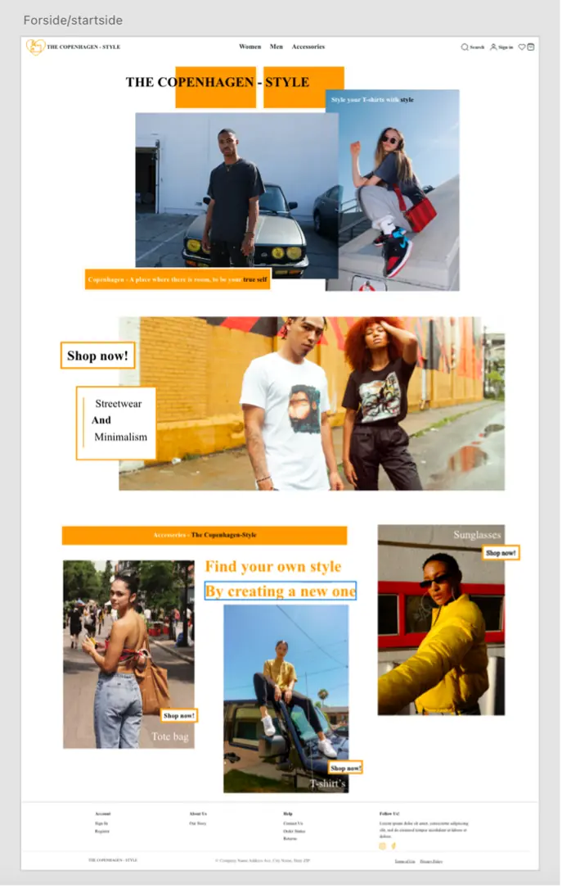
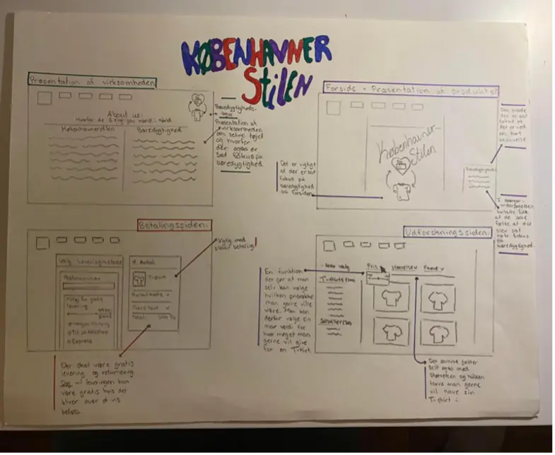
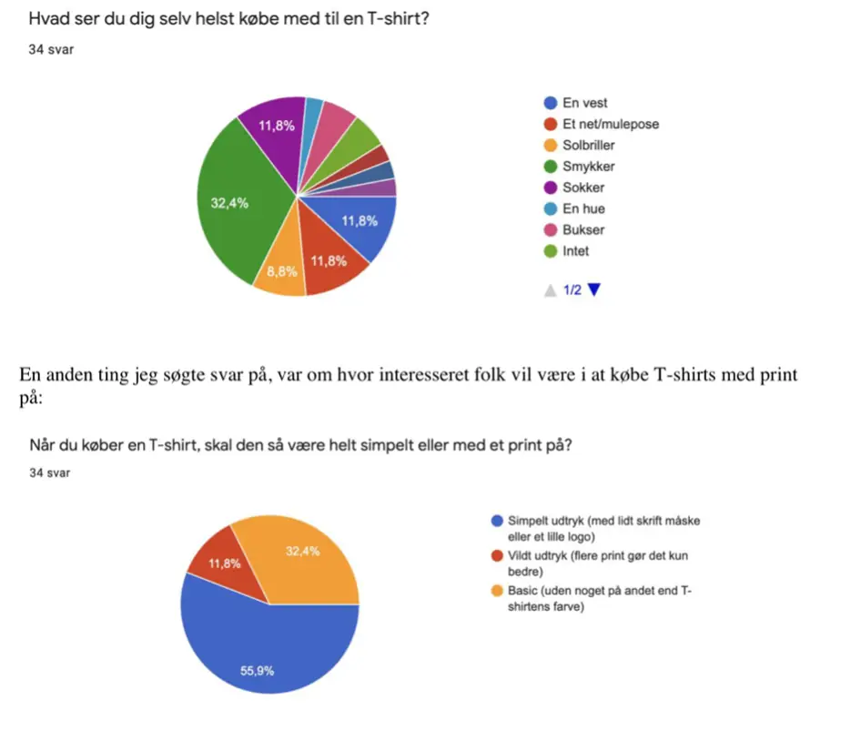

Grundlæggende UX
Prototype 2 - Forside
Til opgaven ”prototype 2” skulle der udarbejdes et udkast til konceptet til webshoppen, med fokus på brugergrænseoverfladen og brugeroplevelsen, her kom der også fokus på hvilke designprocesser der kan bruges for at komme i gang med sit design.
Skitse
Derudover kom vi også ind på daf UI og UX-elementer til webshoppen, dette brugte vi i vores UX pitch deck opgave. Herunder fik jeg lavet opgaven færdig, ved at indarbejde den visuelle stil, som jeg lagde mig fast på i mit styletile, hvor jeg derefter arbejdede med at implementere fotos, copy, microcopy og tagline. Derefter er vi kommet ind på de forskellige pitchteknikker i forhold til at sælge sit produkt, med fokus på resourch indenfor kvalitativt og kvantitativt data.
Survey Undersøgelse
Som løsning under designprocessen blev der f.eks. brugt solution sketch, til at komme i gang med designet til websitet. Derudover blev der brugt testmetoden Survey Resourch, for at komme mere i dybden om brugervenligheden og for at dykke ind i emnet.